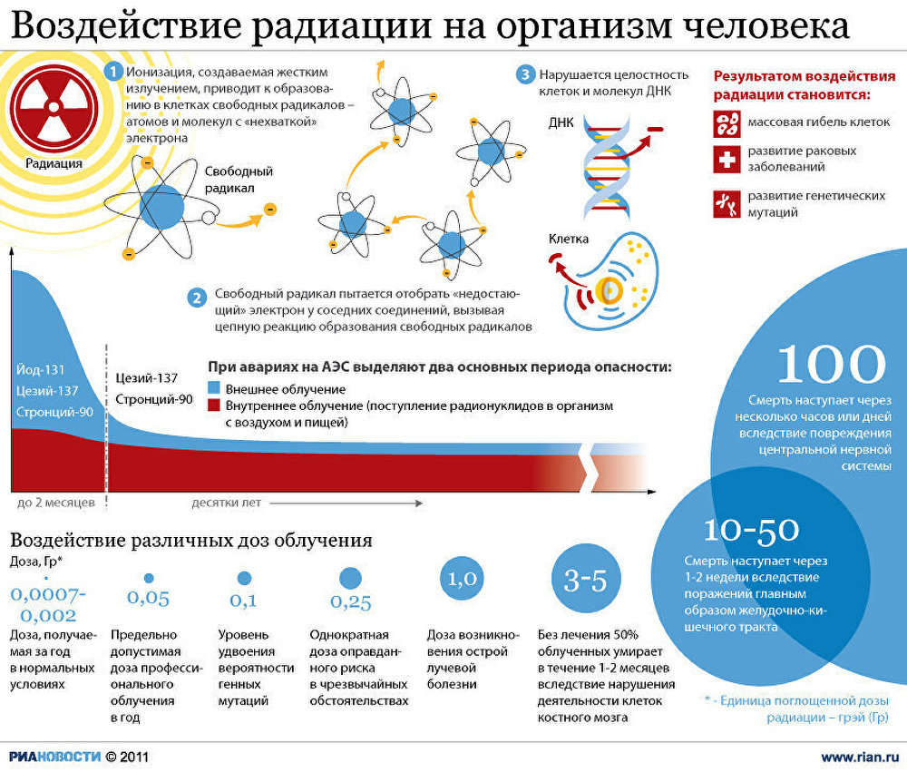
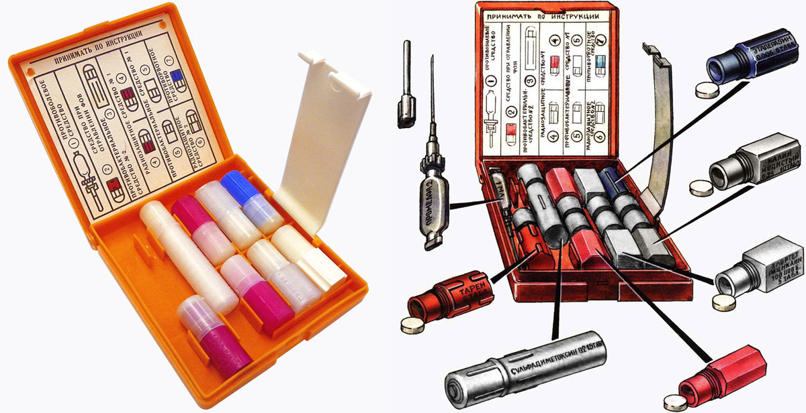
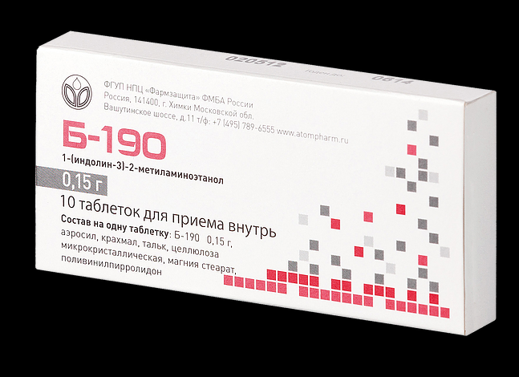
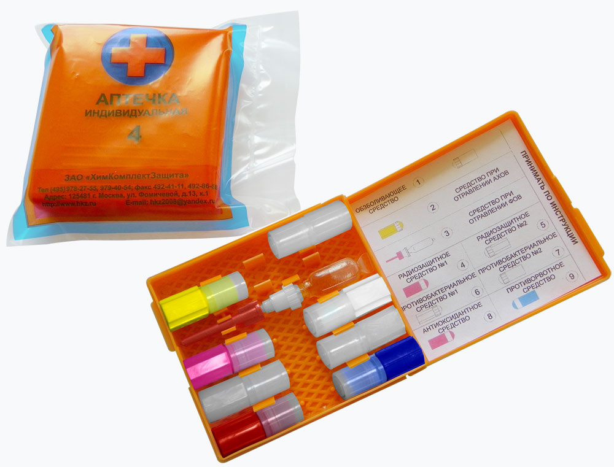
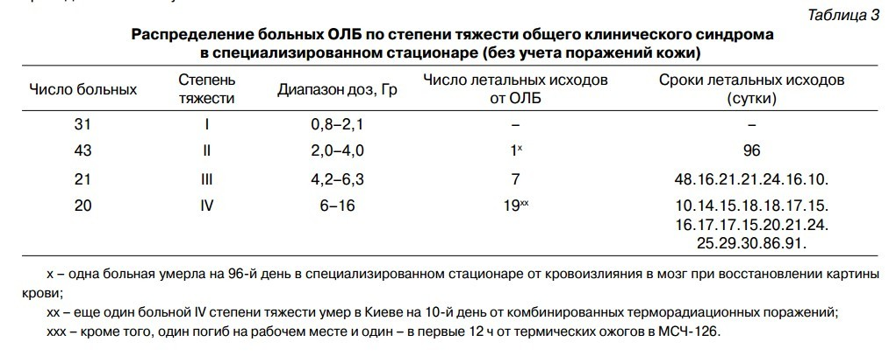
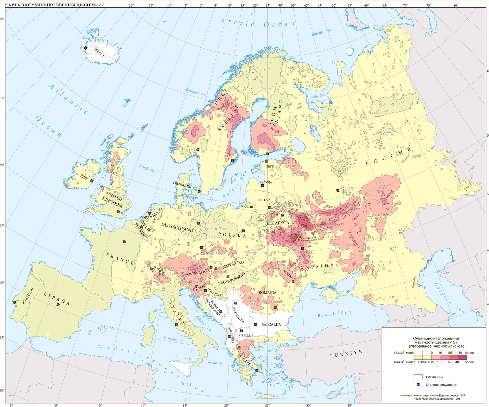
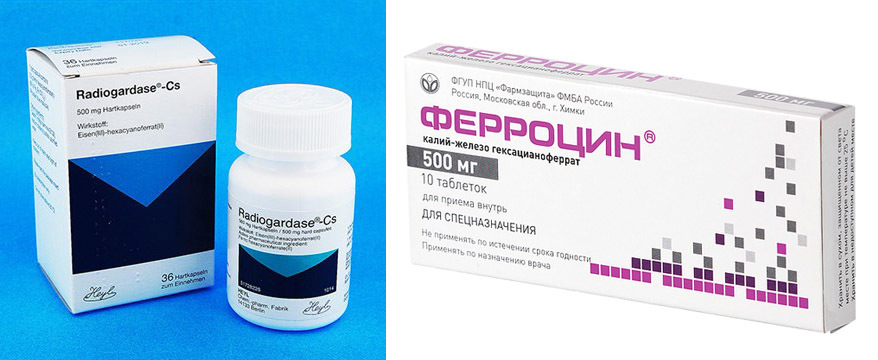

Несмотря на то что человек всегда жил в условиях естественной радиации, с середины прошлого века у него возникла новая радиационная угроза техногенного облучения в чрезвычайных ситуациях. Это может быть ситуация применения атомного оружия, авария на ядерном объекте или террористический акт с применением “грязной” бомбы.
Население в случае подобной серьезной угрозы эффективнее всего спасать путем эвакуации, хотя ряд медикаментов можно применять и им. А вот спасателей и военных, которым придется работать в опасных условиях, обязательно нужно снабжать средствами индивидуальной защиты, в том числе и разными медицинскими препаратами от действия ионизирующих излучений. Ряд таких препаратов, называемых радиопротекторами, и сценарии для их применения я и попытаюсь описать в этой статье.
Что такое радиация
Прежде чем говорить о таблетках от радиации давайте определимся с тем что такое радиация и как от нее вообще можно защититься. Это пригодится в при дальнейшем объяснении принципа работы некоторых препаратов.
Под общим словом радиация в бытовом применении можно понимать как несколько видов излучения — альфа, бета, гамма, нейтронное и рентгеновское, так и источники этих излучений в виде радиоактивных веществ — радионуклидов, то-есть радиоактивных изотопов химических элементов. Если говорить о защите от радиации в чрезвычайных ситуациях, то под ней стоит понимать именно комплекс мер по снижению как воздействия на организм излучений, так и предотвращение контакта с радионуклидами и их накопления в организме.
Если эти радионуклиды находятся внутри организма, то человек подвергается внутреннему облучению. Если радионуклиды и другие источники излучения снаружи — то внешнему.
Думаю ни для кого не секрет, что радиация появилась не с развитием атомной энергетики или с появлением атомного оружия, а была в природе всегда. Просто деятельность человека, понастроившего ускорителей и атомных реакторов, привела к появлению новых радиоактивных изотопов, таких как плутоний-239 или цезий-137, которых в природе либо давно нет, либо их слишком мало.
Но помимо них в нашем организме постоянно присутствуют естественные радионуклиды типа калия-40, мы дышим радиоактивным газом радоном, выделяющимся из-под земли, снаружи нас облучает космическое излучение и фон от радионуклидов на поверхности земли. т.е. существует некий природный радиоактивный фон, считающийся нормальным, от которого стоит защищаться лишь в случае его аномального увеличения (например, от высоких концентраций радона в домах).
Стоит сразу напомнить, что помимо лекарственных препаратов, которым посвящена эта статья, гораздо более распространенными являются три классических метода защиты от радиации — время, расстояние и вещество. Это означает, что нужно стараться снижать время присутствия в зоне высоких радиационных излучений, держаться от них подальше и по возможности закрываться от источников излучений защитными экранами из разных веществ типа свинца, стали, бетона, воды, парафина и многих других, в зависимости от типа излучения.
Воздействие радиации на организм
Радиоактивные излучения называются ионизирующими, поскольку от остальных видов излучений, таких как например радиоволны или любое другое электромагнитное излучение, они отличаются высокой энергией и способностью ионизировать вещество — отрывать электроны от атомов, образовывая ионы. Образовавшиеся внутри органических соединений свободные электроны и ионы запускают сложную цепь химических реакций, в результате которых рвутся сложные молекулы белков и образуются очень активные формы свободных радикалов. В воде, составляющей 80% тела человека, образуются свои продукты ионизации — сильные окислители в виде перекиси и гидроперекиси водорода. Все эти свободные радикалы затем взаимодействуют с органическими молекулами, включая ДНК (отсюда возникает повышенная вероятность рака и генетических нарушений у потомков после облучения), нарушая нормальное функционирование клеток организма или полностью разрушая их.

Простенькая инфографика о воздействии радиации на организм. РИА Новости, Инфографика. Надежда Андрианова
В самом крайнем случае такие повреждения клеток могут привести к сильной интоксикации организма, повреждению наиболее чувствительных тканей, например, костного мозга, и смерти всего организма от острой лучевой болезни. При получении достаточно высоких доз (больше 10 Зв) можно умереть прямо на месте — это так называемая “смерть под лучом”. При малых дозах организм может полностью справиться с повреждениями, но вероятность онкологических заболеваний или генетических последствий у потомков возрастает с ростом полученной дозы, хотя они и не обязательно появятся. Поскольку защитные свойства организма позволяют бороться с повреждениями клеток и отсекать ненужные мутации, но чем этих повреждений было больше, тем выше шанс что что-то организм пропустит.
Препараты от радиации
Как мы поняли выше, сам метод воздействия радиации на организм очень непрост, до конца не изучен, и проходит в несколько физико-химических стадий. Существующие методы химической защиты тоже отличаются в зависимости от того, каким образом они мешают описанным выше процессам наносить организму вред. Таким образом, можно разделить экстренные радиопротекторы на два типа:
1. Препараты, защищающие организм от острого лучевого поражения.
2. Препараты, препятствующие накоплению радионуклидов или выводящие их из организма.
Тип 1. Препараты, защищающие организм от острого лучевого поражения.
Сценарий применения таких средств предполагает, что человек заранее знает что ему предстоит высокое облучение и принимает их за несколько минут или часов перед ним либо сразу после облучения. Принимать их спустя несколько часов после облучения уже бесполезно.
Такие сценарии актуальны для военных во время какой-нибудь операции во время ядерной войны, для спецподразделений, спасателей, сотрудников атомных объектов на случай необходимости устранения какой-то аварийной ситуации ну и для оказания экстренной помощи пострадавшим в результате этих аварий. Понятно, что это все экстремальные сценарии, когда есть некая задача, которую надо выполнить почти любой ценой и другие варианты защиты не могут дать нужного эффекта. Населению и простым обывателям в случае такой угрозы проще и правильнее просто эвакуироваться.
Многие радиопротекторы способны снижать образование свободных радикалов, разрушать или предотвращать их образование в клетке. Другие способны снижать доступ кислорода из крови в клетку (например, вазоконстрикторы), и тем самым уменьшать уровень активных форм кислорода, усиливающих разрушающее действие активных радикалов. Третьи могут контролировать накопление перекисных продуктов в клетке — ряд ферментов (каталаза, пероксидаза, цитохром с-450) и антиокислителей (тиолаы, биогенные амины).
Однако эффективность этих препаратов довольно низкая, до применения на людях дошли немногие, а побочных эффектов у них много. На опытах по исследованию препарата МЭА с мышками удавалось повышать полулетальную дозу (после получения которой гибнет половина мышей в течение 30 дней) в 1,5-2 раза, но с ростом концентрации препарата мышки начинали дохнуть уже от него. Так что тут все непросто.
Вот некоторые известные препараты: цистеамин, меркамин, цистамин, МЭА, АЭТ, гаммафос, WR 2721, серотонин, 5-ОТ, мексамин, 5-МОТ.
В советской аптечке на случай чрезвычайных происшествий АИ-2 (использовалась с 1978 по 2000-е) одним из двух (про второе чуть ниже) противорадиационных средств был Цистамин — радиозищитное средство №1. По данным сайта Минобороны он ослабляет эффект обучения в 1,3 — 1,5 раза. По инструкции принимать нужно сразу 6 таблеток по 0,2 г за 30-60 мин до облучения. При сохранении угрозы — повторить прием не раньше чем через 4-5 часов.

Аптечка АИ-2. (С 1978 по 2012 г). Гнездо 4: Радиозащитное средство №1 — Цистамин. Гнездо 6: Радиозащитное средство №2 — Йодид калия. Гнездо 7: Противорвотное средство — Этаперазин
В настоящее время в комплектах индивидуальной защиты МЧС, Минобороны и в пришедших на смену АИ-2 гражданских аптечках АИ-4 присутствует более современный препарат экстренного действия Б-190 (индралин).

Препарат Б-190 в заводской упаковке.
По утверждению производителей из ФГУП НПЦ «Фармзащита» Б-190 способен обеспечить выживаемость в 90% случаев при получении смертельной дозы облучения. А показание к применению — прогнозируемая доза облучения всего тела более 1 Зв (нижний предел наступления острой лучевой болезни). Применяют как и Цистамин сразу по 3 таблетки в течение часа перед облучением.

Аптечка АИ-4. (Принята с 2012 г). Гнездо 4: Радиозащитное средство №1 — Б-190. Гнездо 5: Радиозащитное средство №2 — Йодид калия. Гнездо 9: Противорвотное средство — Ондансетрон
Для справки — у ликвидаторов аварии на ЧАЭС в 1986 году было установлено ограничение на полученную дозу в 0,25 Зв (25 Рентген или 25 бэр — если считать в принятых на тот момент единицах). Около 100 тысяч ликвидаторов-военных получили среднюю дозу 0,11 Зв. Есть ряд свидетельство о применении цистамина летчиками вертолетов, летавших над реактором. Но я не нашел информации о применении препаратов теми, кто работал в самом «горячем» месте — на крыше соседнего блока, сбрасывая обратно то что вылетело из активной зоны.
Но дозу там пытались регулировать классическим способом — ограничением времени присутствия (несколько минут) и физической защитой — свинцовыми фартуками, ну и противогазами или респираторами для предотвращения внутреннего облучения. Насколько меры были адекватны сказать сложно, есть много свидетельств довольно безалаберного отношения к дозконтролю и индивидуальной защите. Но из нескольких сотен человек, у которых были подозрения на острую лучевую болезнь, она подтвердилась лишь у 134 человек. Из них умерли 28, которые получили дозы от 0,8 до 16 Зв.

Погибшие среди получивших острую лучевую болезнь в зоне Чернобыльской аварии по данным А.К. Гуськовой — легендарного врача, заложившего основы лечения лучевой болезни в нашей стране еще задолго до Чернобыля и лечившей пострадавших в 1986-м. Взята из ее статьи «Последствия для здоровья лиц, участвовавших в ликвидации аварий на Чернобыльской АЭС, основные итоги и нерешенные проблем»
Так что даже среди сотен тысяч ликвидаторов дозы, при которых рекомендовано применение препарата Б-190 (более 1 Зв в течение нескольких часов), получили лишь десятки человек. Возможно, он спас бы им жизни.
В обеих аптечках, АИ-2 и АИ-4, присутствуют противорвотные препараты — Этаперазин и Ондансетрон (Он же"Латран"). Их тоже можно отнести к средствам радиационной защиты, поскольку одними из первых симптомов переоблучения и острой лучевой болезни является рвота и тошнота. Эти препараты позволяют снять симптомы и сохранить частичную работоспособность при высоком облучении. Другие подобные препараты: Диметпрамид, Динитрол, Зофрам, Диксафен.
Тип 2. Препараты, препятствующие накоплению радионуклидов и выводящие их из организма
Опасность столкнуться с радиационной угрозой в виде радионуклидов — это гораздо более типичный сценарий для простого обывателя и населения в случае радиационных аварий и тем более в случае гипотетического теракта с применением «грязной» бомбы. Для последней именно распыляемые радионуклиды и являются основным поражающим элементом, ну если не считать панику. О том чем опасна грязная бомба можно узнать из неплохого документального фильма National Geographic, где рассмотрен гипотетический сценарий ее применения в крупном городе.
Во время Чернобыльской катастрофы население также подверглось в основном облучение за счет поступивших в организм радионуклидов, в то время как острое лучевое поражение наблюдалось лишь у нескольких сотен ликвидаторов.
Но есть и хорошие новости. В области создания радиопротекторов второго типа от наиболее опасных для человека радионуклидов — I-131 (Йода-131) и Cs-137 (Цезия-137), достигнуты гораздо лучшие результаты, чем с радиопротекторами первого типа. По крайней мере при правильных дозировках и своевременном применении у них практически нет побочных эффектов, а эффективность может достигать почти 100%.
И I-131 и Cs-137 являются продуктами распада урана и образуются в ядерных реакторах во время их работы. В случае аварии они могут выйти за пределы реактора в виде газоаэрозольного выброса, как это было в Чернобыле и на Фукусиме. Разница их в том, что Йод-131 выделяется в летучей форме и имеет небольшой период полураспада — всего около 8 дней. Поэтому угроза от него возможна лишь в случае аварии на действующем ядерном реакторе (на атомной станции, атомном ледоколе, исследовательском реакторе и т.д.) и лишь в первые несколько дней и недель после аварии. Зато это пожалуй главная угроза для населения в случае аварии на АЭС. По данным доклада ООН, единственный зафиксированный радиационно-вызванный вред здоровью населения от Чернобыльской аварии — это 4000 случаев выявленного рака щитовидной железы у лиц детского и подросткового возраста на момент аварии. Подавляющее большинство (99%) из них выжили.
От йода-131 можно защититься небезызвестной йодной профилактикой. Йод имеет свойство неравномерно накапливаться в организме, около трети его поступления скапливается в щитовидной железе, подвергая ее наибольшей опасности, повышая вероятность рака. Йодная профилактика заключается в насыщении организма стабильным йодом, в результате чего его радиоактивные изотопы просто вытесняются и не усваиваются. Таким образом, это чем-то похоже на защиту от радиации расстоянием и временем одновременно, поскольку источники излучения удаляются из организма и время их присутствие в нем сильно сокращается.
Главная проблема тут — не переборщить. Поскольку йод широко доступен, так же как широко распространена радиофобия, любая новость о каком-то ЧП на атомной станции может вызвать у населения волну паники с последующей скупкой всего йода из аптек и даже отравлениями. Правильные дозировки и препараты подробно описаны тут. Лучше всего использовать таблетированный йодид калия. Норма для взрослого — одна таблетка 125 мг в сутки. В крайнем случае можно использовать 5% спиртовой раствор йода, растворив 1 мл (44 капли) в половине стакана молока или воды.
У цезия период полураспада гораздо больше — около 30 лет. Поэтому он будет представлять угрозу гораздо дольше — до сих пор большие территории загрязнены цезием после Чернобыльской аварии, исторические и прогнозные уровни можно посмотреть в составленном Атласе на сайте МЧС. Аналогичный выброс был и на АЭС Фукусима. Большой период полураспада цезия-137 обуславливает и то, что выброс его возможен не только в случае аварии на реакторе АЭС, где этот цезий образуется, но и в случае аварий на других ядерных объектах, где он хранится, например на заводах по переработке отработавшего ядерного топлива. Такая авария была на ПО Маяк в Челябинской области в 1957 году, где взорвалась емкость с радиоактивными отходами, что привело к образованию Восточно-Уральского радиоактивного следа. Именно цезий скорее всего может быть использован в грязной бомбе, как это и показано в фильме National Geographic выше.

Карта загрязнения Европы цезием-137 от аварии на Чернобыльской АЭС на 1986 год. Данные МЧС РФ.
Но для выведения цезия-137 тоже есть хороший препарат, известный в мире как Берлинская лазурь. Хотя на самом деле это название довольно широкого класса соединений, исторически применявшихся как красители, и далеко не все из них хорошо сорбируют Cs-137. В фильме National Geographic об этом препарате под общим названием Берлинская лазурь рассказывают начиная с 25-й минуты. В СССР и России сорбент для извлечения Cs-137 на основе этого класса соединений (ферроцианидов) и сам медицинский препарат для людей называется Ферроцин. Принцип действия у него простой — он связывает (сорбирует) цезий, поступивший с пищей и водой внутрь желудочно-кишечного тракта и не дает ему всасываться в кровь и поступать в организм. В итоге до 99% поступившего цезия проходит через ЖКТ напрямую не задерживаясь.
Таблетки Ферроцина выпускает уже не раз упомянутая выше ФГУП НПЦ «Фармзащита». Из иностранных аналогов фероцинсодержащих препаратов существует Radiogardase производства Германии. Из других отечественных — новый препарат Компоферрон, хотя помимо выведения Cs-137 и таллия он, как препарат с большим содержанием железа, больше направлен на лечение анемии.

Ферроцинсодержащие препараты для выведения цезия из организма. Иностранный Radiogardase и отечественный Ферроцин.
На случай радиационной аварии ФГБУ Всероссийский центр медицины катастроф «Защита» Министерства здравоохранения РФ рекомендует применять препарат Ферроцин «по 1 г (2 таблетки) 3 раза в день в случае угрозы или реального поступления внутрь организма радиоизотопов цезия, рубидия и других продуктов деления трансурановых элементов, а так же в случае невозможности исключения поступления радиоактивного цезия в желудочно-кишечный тракт с водой или пищей».
Что означает последнее? Это касается ситуации, когда люди продолжают жить и вести хозяйство на территориях, загрязненных радионуклидами. Таких территорий после Чернобыльской аварии полно. В России наиболее загрязненными оказались Брянская, Тульская, Орловская и Калужская области (тут можно еще раз взглянуть на Атласе МЧС, где есть все карты загрязнений. Есть такие территории и в Украине, и в Белоруссии, и в Европе, и возле Семипалатинского полигона в Казахстане, а с 2011 года и в Японии. По данным ООН, в зонах загрязненных радионуклидами после аварии на ЧАЭС сейчас живет не менее 5 млн человек. Существует много аргументов в пользу того, чтобы попытаться вернуть эти территории в нормальное и привычное использование. Всех же не эвакуируешь, люди сами не хотят уезжать, да особо острой необходимости и нет, поскольку уровни загрязнения порой не требуют эвакуации (внешний фон небольшой, концентрации радионуклидов низкие), а лишь накладывают ограничения на употребление сельхозпродукции местного производства (поскольку в ней радионуклиды концентрируются) и на ее продажу в другие регионы. Употребление ферроцинсодержащих препаратов позволяет это ограничение снимать. Грубо говоря, можно есть огурцы и и помидоры, выращенные на грядке с небольшим содержанием цезия, или пить молоко и есть мясо коровы, пасущейся на лугах с цезием, если закусывать это все таблетками с ферроцином.
Но можно же пойти дальше, если, например, давать тот же ферроцин самой корове, свинье или курице. Будет ли мясо и молоко чище? После Чернобыля такие эксперименты проводили и ответ однозначный — да. На основе чистого Ферроцина создали ряд препаратов для удобного применения на животных, включая чистый ферроцин в порошке, лизунцы с ферроцином или препарат Бифеж, где содержание ферроцина около 10%. При правильной дозировке (от 3 г в пересчете на ферроцин на голову в сутки) такие препараты позволяют снижать содержание цезия и тяжелых металлов в молоке и мясе коров в 10-20 раз. Так что с такими радиопротекторами можно не только самостоятельно употреблять продукцию с этих территорий, но и возвращать их в хозяйственный оборот, выращивая эту продукцию на продажу, поскольку она уже укладывается в установленные нормативы по содержанию радионуклидов.
Из препаратов для людей стоит упомянуть еще минимум два. Это Полисурьмин — для выведения изотопов стронция — в первую очередь стронция-90, у которого с цезием -137 близкий период полураспада (чуть меньше 30 лет) и доля выхода при делении ядерного топлива, т.е. его количество в реакторе. Этим два фактора объясняют, почему помимо карт загрязнения территорий от Чернобыльской аварии имеются похожие карты на загрязнение по стронцию.
Еще стоит упомянуть препарат Пентацин, который ускоряет выведение из организма плутония, иттрия, церия, цинка, кадмия, кобальта, марганца и свинца, в том числе их радиоактивных изотопов.
Заключение
Если вы не военный, не спасатель и не сотрудник ядерного объекта, то бояться острого внешнего облучения в результате какого-либо инцидента вам не стоит. Даже среди ликвидаторов аварии на ЧАЭС лишь очень малая доля людей попадала в ситуации, в которых целесообразно применение радиопротекторов первого типа. Не удивительно, что они присутствуют лишь в спецаптечках. А вот знать как защищаться от возможного выброса радионуклидов лишним не будет, поскольку именно это основная угроза для населения в случае радиационных аварий и терактов. Йодную профилактику небесполезно уметь делать безопасно и своевременно, благо доступ к йоду есть у всех. Ферроцинсодержащие препараты включены в перечень обязательных лекарств американского национального хранилища Strategic National Stockpile, запасы которого могут использоваться для спасения населения в случае чрезвычайных происшествий или терактов. В России такие препараты-радиопротекторы, наравне в тем что есть в АИ-4, входят в расширенный перечень лекарств, запасы которых должны быть созданы на 100% личного состава МЧС и Минобороны. Но есть ли такой запас для населения на случай масштабного радиационного ЧП — неизвестно.